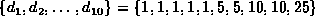

Data Structures and Algorithms
with Object-Oriented Design Patterns in Java
Data Structures and Algorithms
with Object-Oriented Design Patterns in JavaA cashier does not really consider all the possible ways in which to count out a given sum of money. Instead, she counts out the required amount beginning with the largest denomination and proceeding to the smallest denomination.
For example, suppose we have ten coins: five pennies, two nickels, two dimes, and one quarter. That is, . To count out 32 cents, we start with a quarter, then add a nickel followed by two pennies. This is a greedy strategy because once a coin has been counted out, it is never taken back. Furthermore, the solution obtained is the correct solution because it uses the fewest number of coins.
If we assume that the pieces of money (notes and coins) are sorted by their denomination, the running time for the greedy algorithm is O(n). This is significantly better than that of the brute-force algorithm given above.
Does this greedy algorithm always produce the correct answer? Unfortunately it does not. Consider what happens if we introduce a 15-cent coin. Suppose we are asked to count out 20 cents from the following set of coins: . The greedy algorithm selects 15 followed by five ones--six coins in total. Of course, the correct solution requires only two coins. The solution found by the greedy strategy is a feasible solution, but it does not minimize the objective function.
 Copyright © 1998 by Bruno R. Preiss, P.Eng. All rights reserved.
Copyright © 1998 by Bruno R. Preiss, P.Eng. All rights reserved.